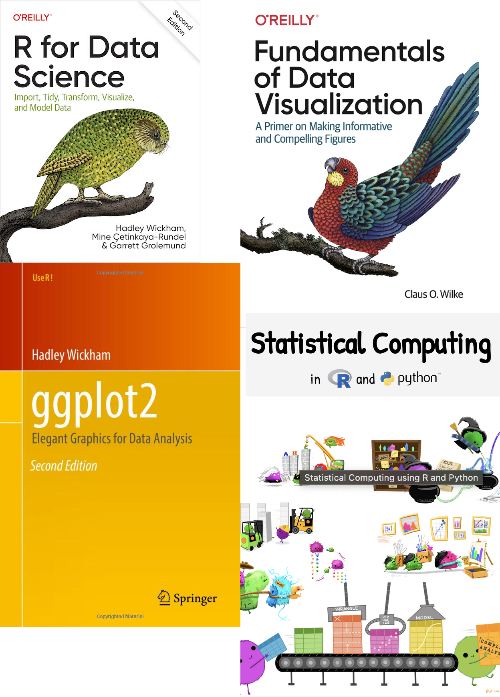
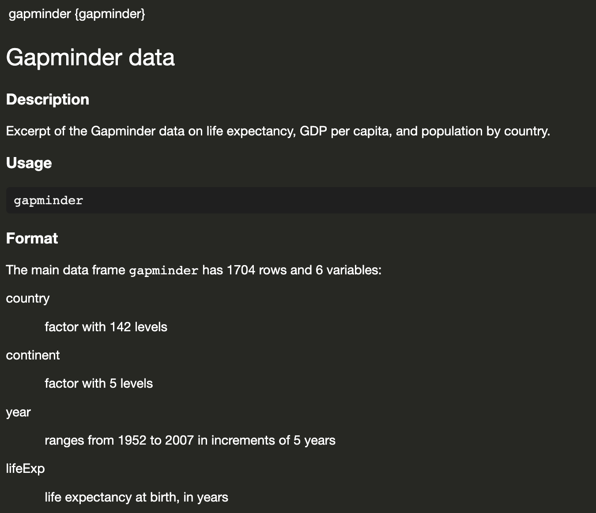
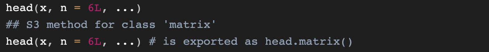

Elements of Data Science
SDS 322E
Department of Statistics and Data Sciences
The University of Texas at Austin
week 01 lecture 01 Fall 2025
R history and ecosystem
S (Roger’s week 2 slides)
Base R + packages
Why data science
Why R?
You don’t need to write FORTRAN code to do data analysis!
R code:
How would the FORTRAN 90 code look like?
FORTRAN 90 code for the same task
9 lines of code in R vs. 70 lines of code in FORTRAN 90
program mtcars_summary
implicit none
integer, parameter :: dp = selected_real_kind(15, 307)
integer, parameter :: nmax = 100
real(dp) :: mpg(nmax), disp(nmax), kpl(nmax)
integer :: cyl(nmax), vs(nmax)
integer :: i, n, j, ngrp, idx
integer :: cyl_group(nmax)
real(dp) :: disp_sum(nmax), kpl_sum(nmax)
integer :: count(nmax)
real(dp) :: disp_mean(nmax), kpl_mean(nmax)
integer :: temp_i
real(dp) :: temp_r
! open and read data
open(unit=10, file='mtcars.csv', status='old', action='read')
n = 0
do
read(10, *, end=100) mpg(n+1), cyl(n+1), disp(n+1), &
temp_r, temp_r, temp_r, temp_r, vs(n+1), &
temp_i, temp_i, temp_i
n = n + 1
end do
100 close(10)
! compute kpl
do i = 1, n
kpl(i) = mpg(i) * 0.425144_dp
end do
! filter vs == 0
ngrp = 0
do i = 1, n
if (vs(i) == 0) then
! check if cyl group already exists
idx = 0
do j = 1, ngrp
if (cyl_group(j) == cyl(i)) idx = j
end do
if (idx == 0) then
ngrp = ngrp + 1
cyl_group(ngrp) = cyl(i)
disp_sum(ngrp) = disp(i)
kpl_sum(ngrp) = kpl(i)
count(ngrp) = 1
else
disp_sum(idx) = disp_sum(idx) + disp(i)
kpl_sum(idx) = kpl_sum(idx) + kpl(i)
count(idx) = count(idx) + 1
end if
end if
end do
! compute means
do j = 1, ngrp
disp_mean(j) = disp_sum(j) / count(j)
kpl_mean(j) = kpl_sum(j) / count(j)
end do
! sort by disp_mean
do i = 1, ngrp-1
do j = i+1, ngrp
if (disp_mean(j) < disp_mean(i)) then
temp_r = disp_mean(i); disp_mean(i) = disp_mean(j); disp_mean(j) = temp_r
temp_r = kpl_mean(i); kpl_mean(i) = kpl_mean(j); kpl_mean(j) = temp_r
temp_i = cyl_group(i); cyl_group(i) = cyl_group(j); cyl_group(j) = temp_i
end if
end do
end do
! print result
print '(A4,2X,A10,2X,A10)', 'cyl', 'disp_mean', 'kpl_mean'
do j = 1, ngrp
print '(I4,2X,F10.3,2X,F10.3)', cyl_group(j), disp_mean(j), kpl_mean(j)
end do
end program mtcars_summaryThe big picture

readr, janitor::clean_names() tidyr dplyr ggplot2 tidymodels
In next few weeks…
| Week | Date | Content |
|---|---|---|
| Week 2 | 09/03 | tidy data concept The dplyr package: mutate, select, filter, arrange, summarize, |
| 09/05 | ||
| Week 3 | 09/08 | Visualization with ggplot2: geometry + aesthetics |
| 09/10 | Visualization with ggplot2: geometry + aesthetics |
|
| 09/12 | Visualization with ggplot2: scale + color + facet + theme |
|
| Week 4 | 09/15 | Advanced data wrangling: dplyr::*_join, tidyr::pivot_longer, and tidyr::pivot_wider |
| 09/17 | Dealing with time: the lubridate package |
|
| … | … | |
| Week 7 | 10/08 | Dealing with text: the stringr package |
Resources
- R for Data Science by Hadley Wickham, Mine Çetinkaya-Rundel, and Garrett Grolemund: https://r4ds.hadley.nz/
- ggplot2: Elegant Graphics for Data Analysis (3e) by Hadley Wickham, Danielle Navarro, and Thomas Lin Pedersen: https://ggplot2-book.org/
- Fundamentals of Data Visualization by Claus O. Wilke: https://clauswilke.com/dataviz/
- Statistical Computing using R and Python by Susan Vanderplas: https://srvanderplas.github.io/stat-computing-r-python/
We will not learn Python in this course.

R beginner pack
Basic operations
basic calculation: 1 + 1 assign <- and = function(arguments) pipe: function2(function(arguments), arguments): function(arguments) |> function2(arguments) |> and %>%
Command + z to undo what you just did Command + y to redo what you just undid
Best practice
lower_case
Gapminder Data
Gapminder Data
# A tibble: 1,704 × 6
country continent year lifeExp pop gdpPercap
<fct> <fct> <int> <dbl> <int> <dbl>
1 Afghanistan Asia 1952 28.8 8425333 779.
2 Afghanistan Asia 1957 30.3 9240934 821.
3 Afghanistan Asia 1962 32.0 10267083 853.
4 Afghanistan Asia 1967 34.0 11537966 836.
5 Afghanistan Asia 1972 36.1 13079460 740.
6 Afghanistan Asia 1977 38.4 14880372 786.
7 Afghanistan Asia 1982 39.9 12881816 978.
8 Afghanistan Asia 1987 40.8 13867957 852.
9 Afghanistan Asia 1992 41.7 16317921 649.
10 Afghanistan Asia 1997 41.8 22227415 635.
# ℹ 1,694 more rowsRead documentation

How many rows and how many columns?
The main data frame gapminder has 1704 rows and 6 variables:
Did you notice?
When we print the data, the header already tells you the number of rows and columns
#A tibble: 1,704 × 6
# A tibble: 1,704 × 6
country continent year lifeExp pop gdpPercap
<fct> <fct> <int> <dbl> <int> <dbl>
1 Afghanistan Asia 1952 28.8 8425333 779.
2 Afghanistan Asia 1957 30.3 9240934 821.
3 Afghanistan Asia 1962 32.0 10267083 853.
4 Afghanistan Asia 1967 34.0 11537966 836.
5 Afghanistan Asia 1972 36.1 13079460 740.
6 Afghanistan Asia 1977 38.4 14880372 786.
7 Afghanistan Asia 1982 39.9 12881816 978.
8 Afghanistan Asia 1987 40.8 13867957 852.
9 Afghanistan Asia 1992 41.7 16317921 649.
10 Afghanistan Asia 1997 41.8 22227415 635.
# ℹ 1,694 more rowsHow many countries?
Country is a factor with 142 levels
How many continent?
Continent is a factor with 5 levels
What’ the range of year reported?
Year ranges from 1952 to 2007 in increments of 5 years
What’s the min, mean, median, max of lifeExp?
Flight data
# A tibble: 336,776 × 19
year month day dep_time sched_dep_time dep_delay arr_time sched_arr_time
<int> <int> <int> <int> <int> <dbl> <int> <int>
1 2013 1 1 517 515 2 830 819
2 2013 1 1 533 529 4 850 830
3 2013 1 1 542 540 2 923 850
4 2013 1 1 544 545 -1 1004 1022
5 2013 1 1 554 600 -6 812 837
# ℹ 336,771 more rows
# ℹ 11 more variables: arr_delay <dbl>, carrier <chr>, flight <int>,
# tailnum <chr>, origin <chr>, dest <chr>, air_time <dbl>, distance <dbl>,
# hour <dbl>, minute <dbl>, time_hour <dttm>We can’t see all the variables - we need a better way to see it
Flight data: dplyr::glimpse()
Rows: 336,776
Columns: 19
$ year <int> 2013, 2013, 2013, 2013, 2013, 2013,…
$ month <int> 1, 1, 1, 1, 1, 1, 1, 1, 1, 1, 1, 1,…
$ day <int> 1, 1, 1, 1, 1, 1, 1, 1, 1, 1, 1, 1,…
$ dep_time <int> 517, 533, 542, 544, 554, 554, 555, …
$ sched_dep_time <int> 515, 529, 540, 545, 600, 558, 600, …
$ dep_delay <dbl> 2, 4, 2, -1, -6, -4, -5, -3, -3, -2…
$ arr_time <int> 830, 850, 923, 1004, 812, 740, 913,…
$ sched_arr_time <int> 819, 830, 850, 1022, 837, 728, 854,…
$ arr_delay <dbl> 11, 20, 33, -18, -25, 12, 19, -14, …
$ carrier <chr> "UA", "UA", "AA", "B6", "DL", "UA",…
$ flight <int> 1545, 1714, 1141, 725, 461, 1696, 5…
$ tailnum <chr> "N14228", "N24211", "N619AA", "N804…
$ origin <chr> "EWR", "LGA", "JFK", "JFK", "LGA", …
$ dest <chr> "IAH", "IAH", "MIA", "BQN", "ATL", …
$ air_time <dbl> 227, 227, 160, 183, 116, 150, 158, …
$ distance <dbl> 1400, 1416, 1089, 1576, 762, 719, 1…
$ hour <dbl> 5, 5, 5, 5, 6, 5, 6, 6, 6, 6, 6, 6,…
$ minute <dbl> 15, 29, 40, 45, 0, 58, 0, 0, 0, 0, …
$ time_hour <dttm> 2013-01-01 05:00:00, 2013-01-01 05…Access the documentation with ?
Look at the first few rows
# A tibble: 3 × 19
year month day dep_time sched_dep_time dep_delay
<int> <int> <int> <int> <int> <dbl>
1 2013 1 1 517 515 2
2 2013 1 1 533 529 4
3 2013 1 1 542 540 2
# ℹ 13 more variables: arr_time <int>,
# sched_arr_time <int>, arr_delay <dbl>, carrier <chr>,
# flight <int>, tailnum <chr>, origin <chr>, dest <chr>,
# air_time <dbl>, distance <dbl>, hour <dbl>,
# minute <dbl>, time_hour <dttm>The last few rows?
# A tibble: 3 × 19
year month day dep_time sched_dep_time dep_delay
<int> <int> <int> <int> <int> <dbl>
1 2013 9 30 NA 1210 NA
2 2013 9 30 NA 1159 NA
3 2013 9 30 NA 840 NA
# ℹ 13 more variables: arr_time <int>,
# sched_arr_time <int>, arr_delay <dbl>, carrier <chr>,
# flight <int>, tailnum <chr>, origin <chr>, dest <chr>,
# air_time <dbl>, distance <dbl>, hour <dbl>,
# minute <dbl>, time_hour <dttm>Check the documentation to see the default n value for head() and tail().

You can also View() the data
What’s the average of arrival delay (arr_delay)
why!!!
Your time
Practice what we’ve just learn via